Circle the letter of the correct answer. Each item has exactly one correct answer.
Collinear points and segments
-
In the figure, the points $A$, $B$ and $C$ are collinear, in this order, $AB = 9$ cm and $BC = 5$ cm. The point $M$ is the midpoint of the segment $AC$. The length of the segment $BM$ is:
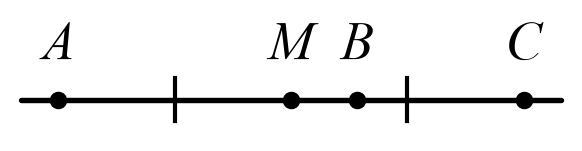
- a) $7$ cm
- b) $2$ cm
- c) $4$ cm
- d) $4,5$ cm
-
In the figure, the points $A$, $B$, $C$ and $D$ are collinear, in this order, with $AB = BC = CD$ and $AD = 15$ cm. The length of the segment $AC$ is:
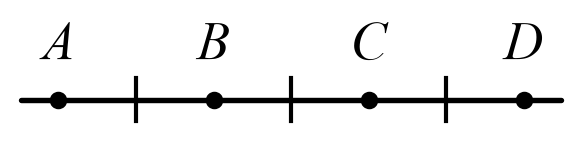
- a) $5$ cm
- b) $7,5$ cm
- c) $10$ cm
- d) $12$ cm
-
In the figure, $AB = 16$ cm, the point $M$ is the midpoint of the segment $AB$, and the point $N$ is the midpoint of the segment $MB$. The length of the segment $AN$ is:
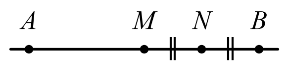
- a) $12$ cm
- b) $8$ cm
- c) $4$ cm
- d) $10$ cm
-
In the figure, the points $A$, $B$ and $C$ are collinear, in this order, $AB = 3 \cdot BC$ and $AC = 20$ cm. The length of the segment $BC$ is:
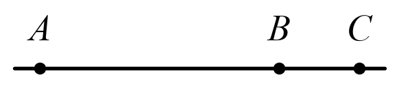
- a) $15$ cm
- b) $4$ cm
- c) $10$ cm
- d) $5$ cm
-
In the figure, $O$ is the midpoint of the segment $AB$, $AB = 9$ cm, and the point $P$ lies on the ray $OB$, beyond $B$, so that $OP = 7$ cm. The length of the segment $BP$ is:
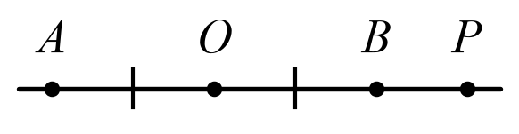
- a) $11,5$ cm
- b) $2,5$ cm
- c) $4,5$ cm
- d) $3$ cm
Angles
-
In the figure, the lines $a$ and $b$ are parallel, and the line $c$ is a transversal. The value of $x$ is:
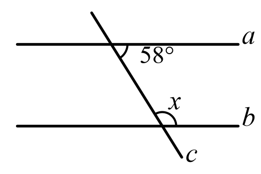
- a) $58{^\circ}$
- b) $122{^\circ}$
- c) $32{^\circ}$
- d) $132{^\circ}$
-
In the figure, the points $A$, $O$ and $C$ are collinear, and $\sphericalangle AOB = \sphericalangle BOC + 40{^\circ}$. The angle $BOC$ measures:
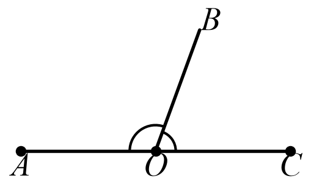
- a) $70{^\circ}$
- b) $110{^\circ}$
- c) $40{^\circ}$
- d) $20{^\circ}$
-
In the figure, the ray $OM$ is the bisector of the angle $AOB$ and $\sphericalangle AOM = 38{^\circ}$. The angle $AOB$ measures:
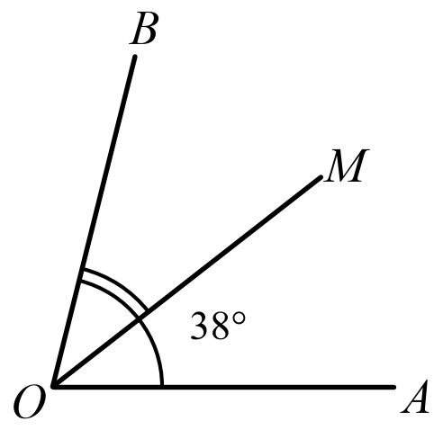
- a) $19{^\circ}$
- b) $52{^\circ}$
- c) $76{^\circ}$
- d) $142{^\circ}$
-
In the figure, the angles $AOB$, $BOC$ and $COA$ are around the point $O$, $\sphericalangle AOB = 130{^\circ}$ and $\sphericalangle BOC = 110{^\circ}$. The angle $COA$ measures:
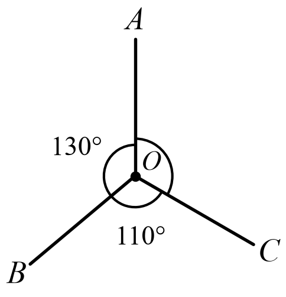
- a) $100{^\circ}$
- b) $60{^\circ}$
- c) $140{^\circ}$
- d) $120{^\circ}$
-
An angle measures $\frac{2}{3}$ of its complement. The measure of the angle is:
- a) $54{^\circ}$
- b) $45{^\circ}$
- c) $36{^\circ}$
- d) $60{^\circ}$
Triangles and quadrilaterals
-
A picture frame has the shape of a rectangle with the dimensions shown in the figure. The length of the frame is:
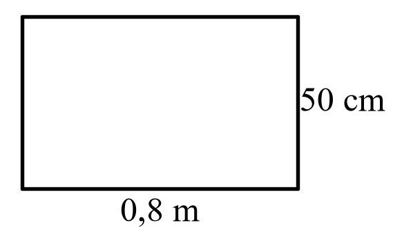
- a) $1,3$ m
- b) $2,6$ m
- c) $1,6$ m
- d) $4$ m
-
In the figure, the triangle $ABC$ is isosceles, with $AB = AC$, and $\sphericalangle B = 65{^\circ}$. The angle $A$ measures:
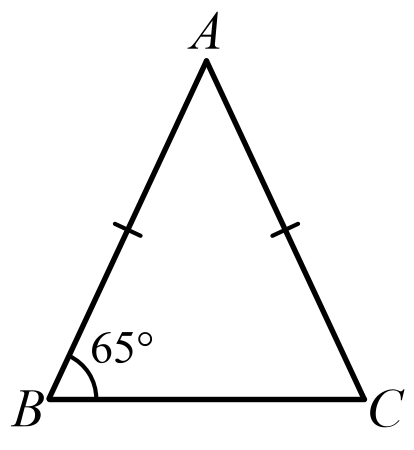
- a) $65{^\circ}$
- b) $115{^\circ}$
- c) $50{^\circ}$
- d) $25{^\circ}$
-
In the figure, $ABCD$ is a parallelogram with $AB = 2 \cdot BC$ and a perimeter of $42$ cm. The length of the side $AB$ is:
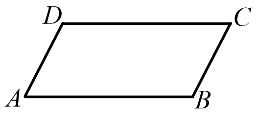
- a) $7$ cm
- b) $14$ cm
- c) $21$ cm
- d) $10,5$ cm
-
In the figure, the triangle $ABC$ is a right triangle with the right angle at $A$, $AB = 5$ cm and $AC = 12$ cm. The length of the hypotenuse $BC$ is:
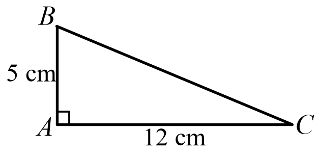
- a) $17$ cm
- b) $7$ cm
- c) $15$ cm
- d) $13$ cm
-
In the figure, $M$ is the midpoint of the side $AB$, $N$ is the midpoint of the side $AC$, and $BC = 18$ cm. The length of the segment $MN$ is:
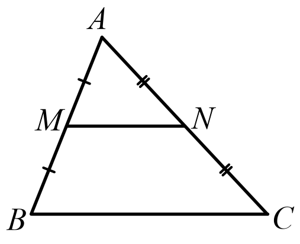
- a) $9$ cm
- b) $6$ cm
- c) $18$ cm
- d) $36$ cm
The circle
-
In the figure, $AB$ is a diameter of the circle with centre $O$ and $AB = 10$ cm. The area of the disc is:
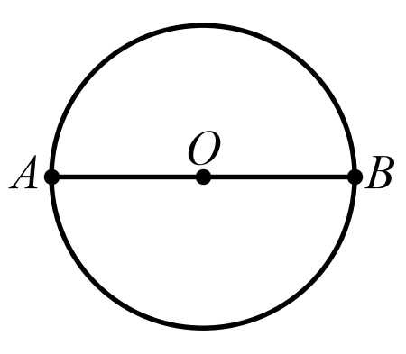
- a) $100\pi$ cm²
- b) $10\pi$ cm²
- c) $25\pi$ cm²
- d) $5\pi$ cm²
-
In the figure, $AB$ is a diameter of the circle with centre $O$, the point $C$ lies on the circle and $\sphericalangle BAC = 35{^\circ}$. The angle $ABC$ measures:
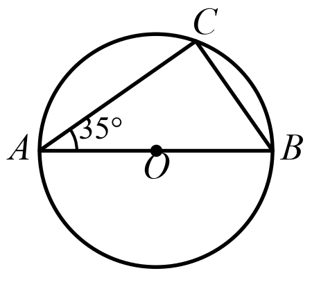
- a) $55{^\circ}$
- b) $35{^\circ}$
- c) $90{^\circ}$
- d) $45{^\circ}$
-
The figure shows a circle with centre $O$ and radius $OA = 6$ cm. The circumference of the circle is:
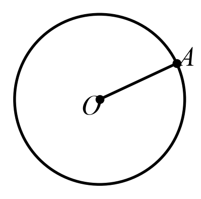
- a) $6\pi$ cm
- b) $36\pi$ cm
- c) $24\pi$ cm
- d) $12\pi$ cm
-
In the figure, the points $A$, $B$ and $C$ lie on the circle with centre $O$, and $\sphericalangle ACB = 40{^\circ}$. The angle $AOB$ measures:
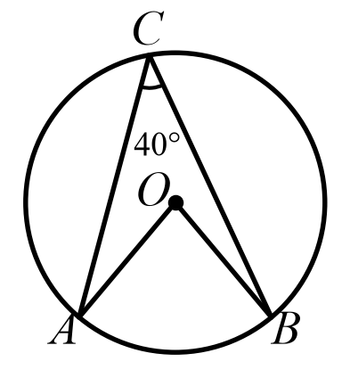
- a) $40{^\circ}$
- b) $80{^\circ}$
- c) $20{^\circ}$
- d) $140{^\circ}$
-
In the figure, the circle with centre $O$ has a radius of $5$ cm, the line $PT$ is tangent to the circle at the point $T$ and $OP = 13$ cm. The length of the segment $PT$ is:
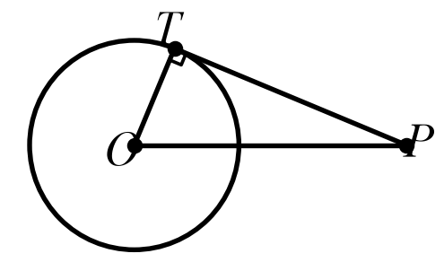
- a) $8$ cm
- b) $\sqrt{194}$ cm
- c) $12$ cm
- d) $18$ cm
Areas
-
In the figure, the rectangle $ABCD$ has an area of $54$ cm² and $BC = 6$ cm. The perimeter of the rectangle is:
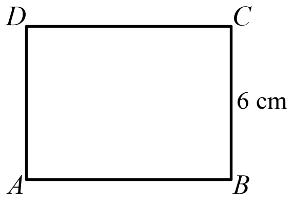
- a) $30$ cm
- b) $15$ cm
- c) $60$ cm
- d) $108$ cm
-
In the figure, $AD\bot BC$, $D \in BC$, $BC = 12$ cm and $AD = 7$ cm. The area of the triangle $ABC$ is:
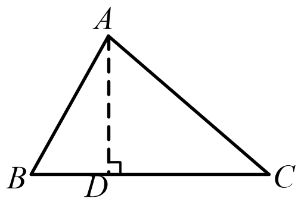
- a) $84$ cm²
- b) $42$ cm²
- c) $19$ cm²
- d) $38$ cm²
-
In the figure, $ABCD$ is a trapezoid with the bases $AB = 13$ cm and $CD = 7$ cm, and the height of the trapezoid is $5$ cm. The area of the trapezoid is:
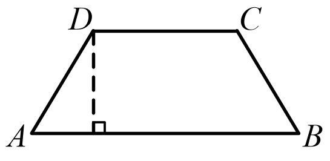
- a) $100$ cm²
- b) $45$ cm²
- c) $50$ cm²
- d) $65$ cm²
-
In the figure, $ABCD$ is a rhombus with the diagonals $AC = 14$ cm and $BD = 9$ cm. The area of the rhombus is:
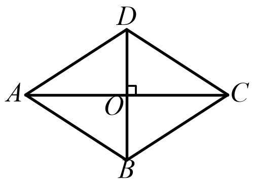
- a) $126$ cm²
- b) $23$ cm²
- c) $31,5$ cm²
- d) $63$ cm²
-
In the figure, the triangle $ABC$ is equilateral, with a side of $6$ cm. The area of the triangle is:
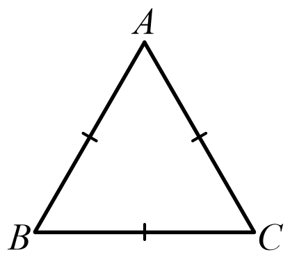
- a) $18\sqrt{3}$ cm²
- b) $9\sqrt{3}$ cm²
- c) $36$ cm²
- d) $6\sqrt{3}$ cm²
The cube and the rectangular cuboid
-
The figure shows the cube $ABCDA'B'C'D'$. The sum of the lengths of all the edges of the cube is $60$ cm. The volume of the cube is:
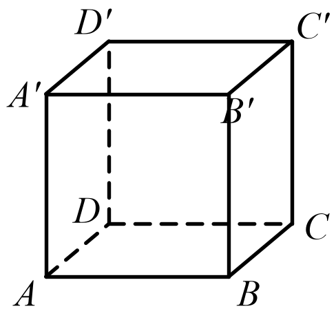
- a) $25$ cm³
- b) $150$ cm³
- c) $125$ cm³
- d) $75$ cm³
-
The figure shows the rectangular cuboid $ABCDA'B'C'D'$, with $AB = 5$ cm, $BC = 3$ cm and $AA' = 2$ cm. The total surface area of the cuboid is:
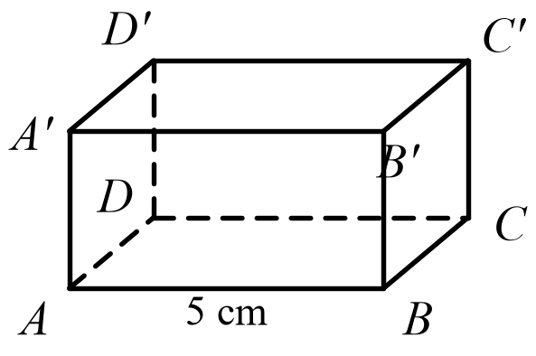
- a) $62$ cm²
- b) $30$ cm²
- c) $31$ cm²
- d) $50$ cm²
-
The figure shows the cube $ABCDA'B'C'D'$. The number of edges of the cube that are parallel to the edge $AB$ (not counting $AB$) is:
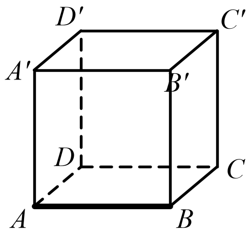
- a) $2$
- b) $3$
- c) $4$
- d) $1$
-
The figure shows the cube $ABCDA'B'C'D'$, with an edge of $5$ cm. The length of the diagonal $AC$ of the face $ABCD$ is:
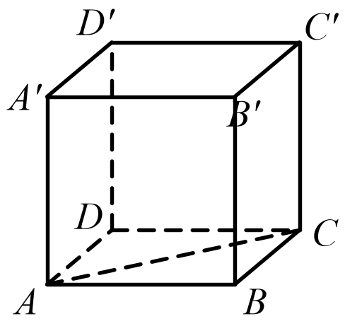
- a) $5\sqrt{3}$ cm
- b) $10$ cm
- c) $25$ cm
- d) $5\sqrt{2}$ cm
-
A box has the shape of a rectangular cuboid, with the dimensions shown in the figure. The greatest number of cubes with an edge of $2$ cm that fit in the box is:
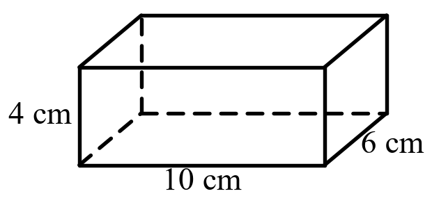
- a) $30$
- b) $240$
- c) $60$
- d) $15$